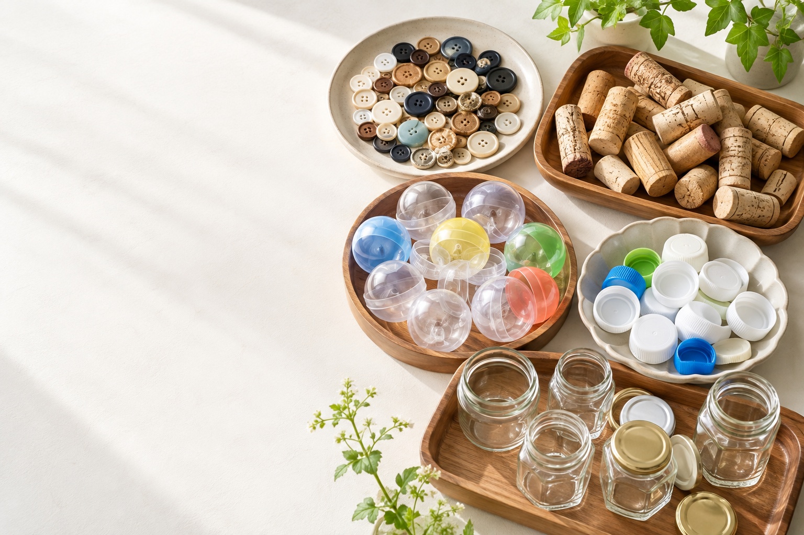
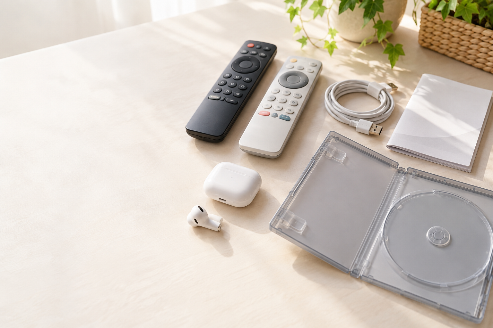
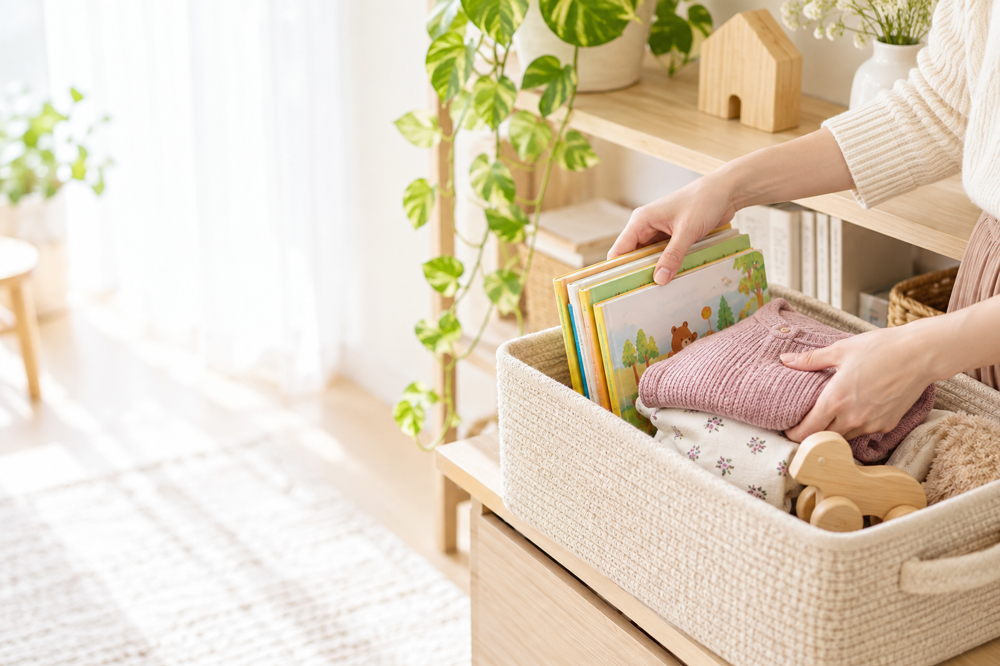

ブランドの紙袋
贈り物の包装や保管用として探す人も。
- 確認すること
- 入手先・サイズ・折れ・持ち手の傷み。正規品と確認できるものに。
- 写真の撮り方
- 表裏、底、持ち手を写す。「紙袋のみ」と明記。
検索例
ブランド名 ショッパー サイズ
メルカリお役立ち
自分にはもう不要でも、
誰かが探しているかも。
収納の奥、引き出しの中、子どもが使わなくなったもの。おうちで使わなくなったものの中から、売れそうなものを探してみましょう。
このリストは出品候補を探すヒントです。売れるかどうかや価格は、種類・状態・時期によって変わります。写真はイメージです。
該当するものがありません。種類を「すべて」にするか、別の言葉で探してみてください。
箱・袋・容器
贈り物の包装や保管用として探す人も。
ブランド名 ショッパー サイズ
収納用やコレクション用の候補に。
ブランド名 空箱
ケースをなくした人が探していることも。
作品名 ケースのみ
形やサイズがそろうと、工作・収納の候補に。
空き瓶 ふた付き まとめ売り

小さな素材
洋服の補修や手芸で探す人も。
ボタン 直径 色 まとめ
工作やディスプレイの材料として。
コルク栓 工作 まとめ
工作用や収納用としての候補に。
空カプセル 直径 まとめ
色を使う工作の材料として探す人も。
ペットボトル キャップ 色 工作
少量の補修やハンドメイドの材料に。
はぎれ 生地 素材 ／ 毛糸 残り
ラッピングや手芸の材料を探す人に。
リボン レース 幅 色 まとめ売り

付属品・小物家電
なくした・壊れたリモコンの買い替え候補に。
メーカー名 リモコン 型番
操作やお手入れを調べたい人が探す場合も。
メーカー名 型番 取扱説明書
機器に合う交換用を探す人も。
端子名 ケーブル 長さ ／ アダプター 型番
紛失した片側やケースの補充候補に。
モデル名 世代 右耳のみ ／ ケースのみ
予備や買い替え用として見直したいもの。
メーカー名 型番 マウス
なくした付属品や交換用を探す人も。
メーカー名 掃除機 型番 ノズル
コレクション
好きなキャラクターやシリーズを集める人に。
作品名 キャラクター名 商品名
過去の公演やシリーズを探す人も。
アーティスト名 公演名 グッズ名
特集や掲載人物を目当てに探す人も。
雑誌名 年月号 ／ 公演名 パンフレット
好きな作品や限定仕様を探す人に。
作品名 CD 初回盤 ／ 作品名 DVD

衣類・本・暮らし
同じサイズや季節の服をまとめて見直そう。
子ども服 サイズ 季節 まとめ売り
成長して遊ばなくなったものを確認。
メーカー名 おもちゃ 商品名
読み終えた本や、使わなくなった教材も候補。
書名 版 ／ 絵本 セット
好みや生活が変わって使わないものから。
ブランド名 アイテム名 サイズ
趣味で使い切らなかった道具を見直そう。
メーカー名 工具名 ／ 画材名 セット
使う機会が減った道具も整理の候補に。
ブランド名 道具名 型番
検索例の言葉を、自分の商品名・型番・サイズに置き換えて検索。販売状況を「売り切れ」に絞り、同じ種類・状態の商品をいくつか見ます。
出品中の値段だけではなく、付属品・個数・状態・送料込みかまで比較しましょう。検索結果にあることだけで出品可能とは判断しません。
梱包したときの大きさ・重さを先に確認。小物をまとめる場合も、送料が上がらないか比べましょう。
すでに持っている不用品を売るときの目安です。購入代金などはこの計算に含めていません。
発送方法・商品梱包 早わかり表を見る →商品全体、傷、型番・サイズ、付属品を撮影します。空箱なら「箱のみ」、片耳なら「右耳のみ」など、含まれないものもはっきり書きます。
［メーカー名］のリモコン、型番［ ］です。
付属品：［ ］
確認した動作：［ ］
未確認の機能：［ ］
傷・汚れ：［ ］
電池：［付属する／付属しない］
食品・化粧品・チケット類・安全性に問題があるものなどには、個別の出品ルールがあります。ブランド品は正規品と確認できるものに。名前・住所などの個人情報も、商品や付属品に残っていないか確認しましょう。
メルカリ公式：禁止されている出品物 ↗チェックは、このページを開いている間の確認用です。

具体的な始め方を、もっと詳しく知りたい方へ。
公式LINEに戻って「無料勉強会」と送ってください。